| ・卒業論文提出 (H22.02.12) | |||
H多野くん、M永くん、M山くん、Y村くん、K(O)梶くん、S浦くん＝H野くん、の順かな？ Windowsってフォントの区別がつきにくいです。それよりも、執筆要綱通りに書きましょう。 |
|||
|
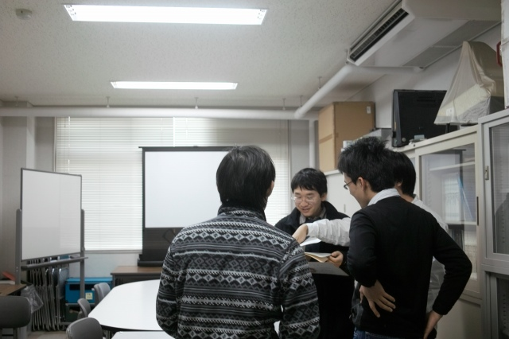
Y名田くん、M野くん「フォントがばらばらです！」 |
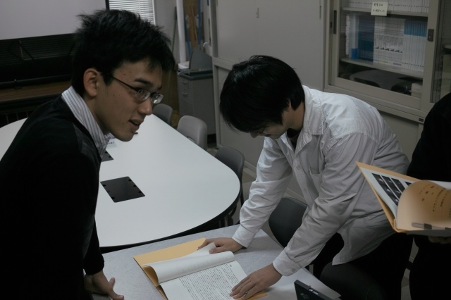
S浦くん「・・・・・」 | ||
|
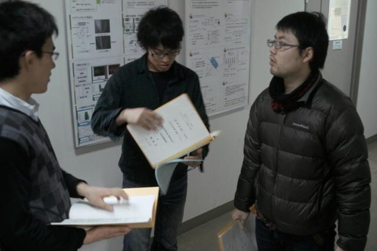
K(O)梶くん「フォントってなに？」 |
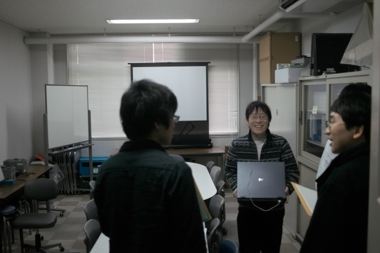
H野くん＠＼(＾o＾)／ | ||
|
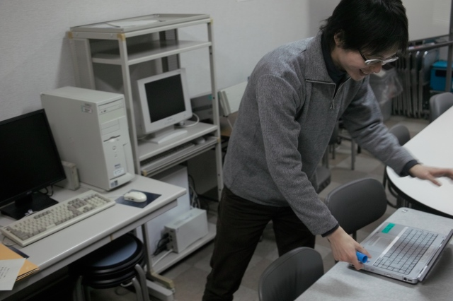
M山くん＠修正原稿出力準備中 |
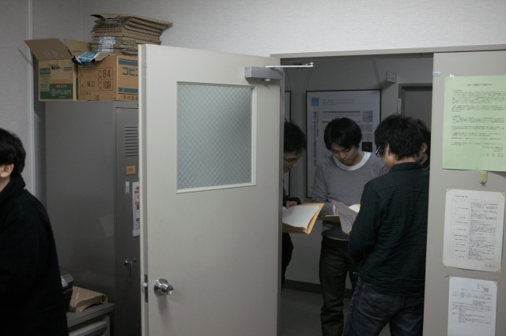
次々見つかるフォーマットのミス | ||
|
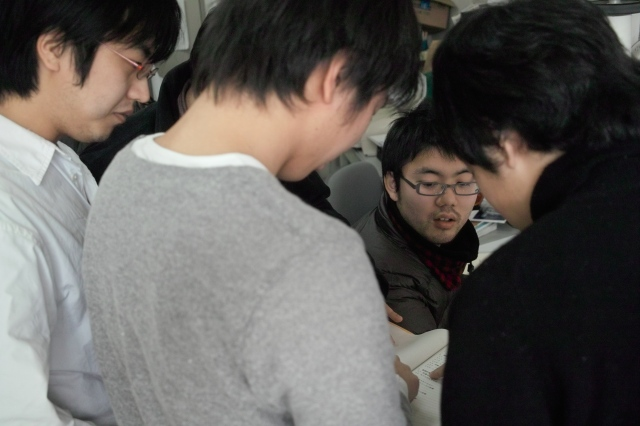
チェッカー、M野くん、Aザワくん、K野くん |
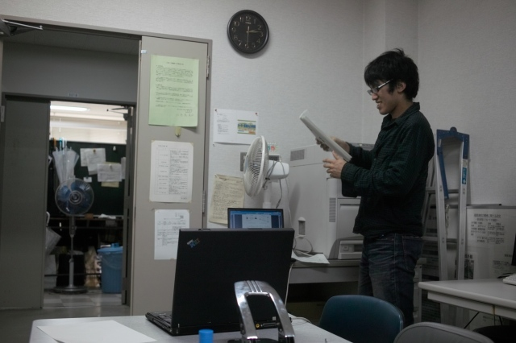
M永くん「ヨシッ！」 | ||
|
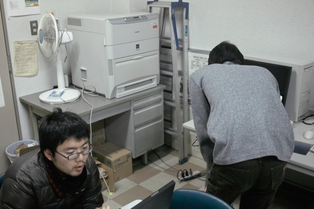
プリンタ前は戦場 |
読めば読むほどミスが。。。 | ||
|
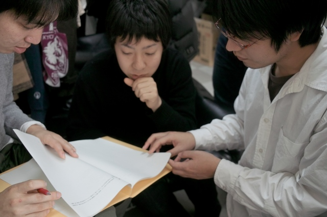
協議中 |
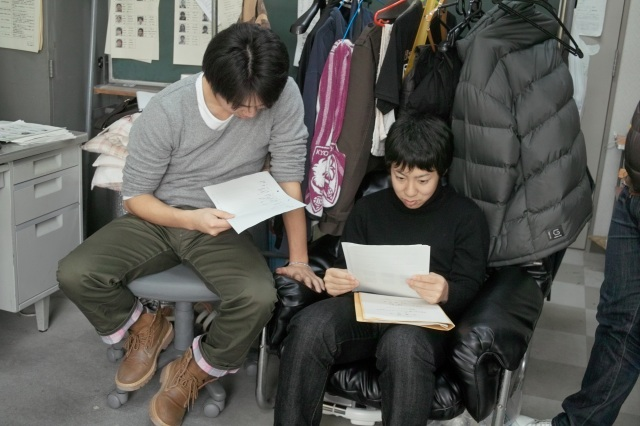
他人の原稿ミスってすぐ見つけるよね | ||
|
H野くん＠修正中 |
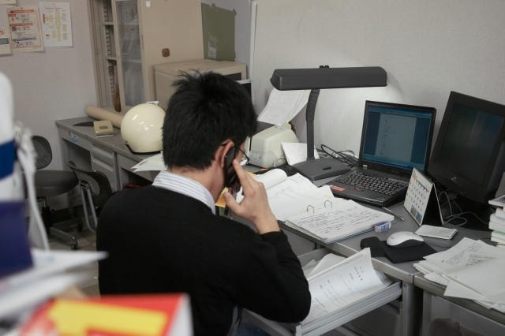
S浦くん＠電話中 | ||
|
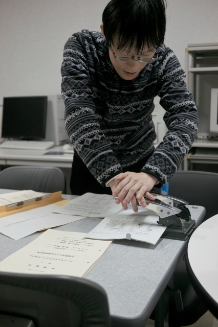
H野くん＠パンチ中 |
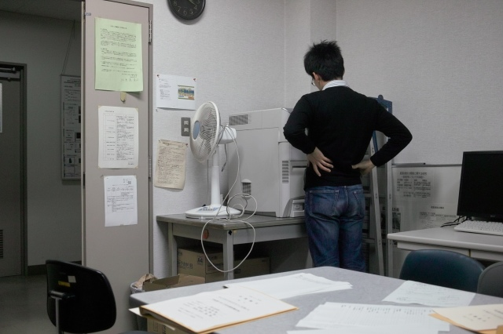
S浦くん＠印刷中 | ||
|
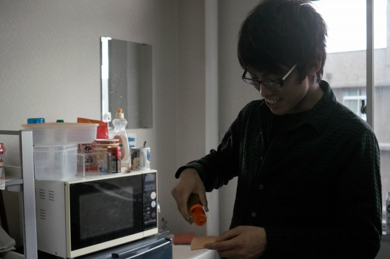
M永くん「提出者のみがタコ煎餅を食べられるんですよ」 |
M永くん「今日もタコ煎餅がうまい！」 | ||
|
H野くん＠ってまだあるの！ |
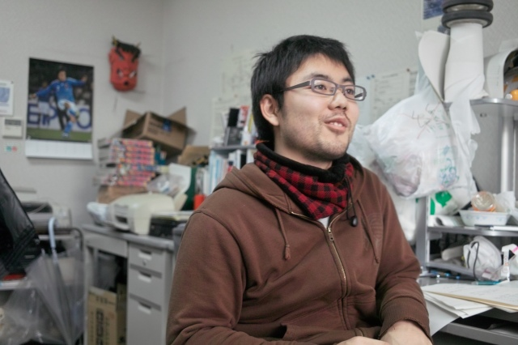
K(O)梶くん「けっこう余裕でしたよ」 | ||